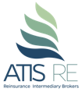

<!DOCTYPE html>
<html lang="en_US">
  <head>
    <title>Atis</title>
    <meta charset="utf8">
    <meta name="viewport" content="width=device-width, initial-scale=1.0">
    <link rel="stylesheet" href="https://fonts.googleapis.com/css?family=Roboto">
    <link rel="stylesheet" href="https://cdnjs.cloudflare.com/ajax/libs/bulma/0.4.2/css/bulma.min.css">
    <link rel="stylesheet" href="css/index.min.css">
    <link rel="stylesheet" href="https://cdnjs.cloudflare.com/ajax/libs/OwlCarousel2/2.2.1/assets/owl.carousel.min.css">
  </head>
</html>
<body><br><br><br>
  <nav class="nav">
    <div class="nav-left"><a class="nav-item"></a></div><span class="nav-toggle"><span></span><span></span><span></span></span>
    <div class="nav-right nav-menu"><a href="index.html" class="nav-item">Home</a>
      <!--a.nav-item(href="index2.html") About Us-->
      <div class="dropdown nav-item">About Us
        <div class="dropdown-content"> <a href="index2.html">Our Team</a><a href="index3.html">Why to choose us</a></div>
      </div>
      <!--a.nav-item Product and Services-->
      <div class="dropdown nav-item">Product and Services
        <div class="dropdown-content"> <a href="index4.html#property">Property &amp; Catatrophe</a><a href="index4.html#energy">Energy</a><a href="index4.html#risk">Financial Risk</a><a href="index4.html#engineering">Engineering</a><a href="index4.html#marine">Marine</a><a href="index4.html#lability">Lability</a><a href="index4.html#life">Life</a><a href="index4.html#livestock">Livestock</a></div>
      </div><a href="index3.html#contactenos" class="nav-item">Contact Us</a>
      <!--a.nav-item.active(href="index3.html")  Help us to help you better-->
      
    </div>
  </nav>
  <div id="owl-home" style="background-color: #f3f9f1;" class="owl-carousel">
        <div class="item">
          <div class="fondo1">
            <div class="in-fondo">
              <h2>Assurance, Transparency, Integrity, Service</h2>
              <p>Don’t wait any longer and experience the ATIS Advantage…</p>
            </div>
          </div>
        </div>
        <div class="item">
          <div class="fondo2">
            <div class="in-fondo">
              <h2>Making Reinsurance Less Complicated</h2>
              <p>Don’t wait any longer and experience the ATIS Advantage…</p>
            </div>
          </div>
        </div>
        <div class="item">
          <div class="fondo3">
            <div class="in-fondo">
              <h2>Flexible It`s always urgent</h2>
              <p>Don’t wait any longer and experience the ATIS Advantage…</p>
            </div>
          </div>
        </div>
        <div class="item">
          <div class="fondo4">
            <div class="in-fondo">
              <h2>You don`t get reinsurance through us, you have ATIS Re Advisory. That makes all difference.</h2>
              <p>Don’t wait any longer and experience the ATIS Advantage…</p>
            </div>
          </div>
        </div>
  </div>
  <!--div(style="background-color: #f3f9f1;height:65px;")-->
  <div style="background-color: #f3f9f1" class="container is-fluid">
    <div class="layout pr">
      <div class="in"> 
        <div class="columns fondo">
          <div class="column">
            <h1 class="main-title">ATIS RE.</h1>
            <p class="main-pretitle mb-25">Was founded on the solid terms of Assurance,Transparency, Integrity, and Service, by a team of reinsurance experts who made their names by delivering great service to the industry.</p>
            <p class="main-content mb-25">Our simple philosophy is to take every opportunity to heart, and never lose sight of the fact that lasting relationships are formed from day one. Each of our team members has earned and kept the trust in the industry by remaining true to the values we stand for, that is what makes us different.</p>
            <p class="main-content mb-25">ATIS RE is a Multiline fully accredited and licensed Reinsurance Intermediary Broker with a team that has over 40 years of combined experience.   We have the ability to meet and exceed our customers' expectations, and our team is dedicated to provide exceptional customer service tailored to exceed your placements chain needs, all while providing complete consulting service, being innovators, accommodating to any size or complexity, those are only few of the advantage of working with us.</p>
            <p class="main-content mb-25">Don’t wait any longer and experience the ATIS Advantage…</p>
          </div>
          <div class="column flex-center flex-out"></div>
        </div>
      </div>
    </div>
  </div><br>
  <div class="layout flex-out">
    <div class="in1">
      <div class="columns columns-v1">
        <div class="column center">
          <h2 class="ours-title">Our Service</h2>
          <p class="ours-content">Our team has one goal – to provide the very best service in the industry. Whether it’s negotiating an endorsement, handling claims, or developing innovative ways to process your reinsurance service needs, ATIS RE is committed to make your experience as convenient as possible.</p>
        </div>
        <div class="column center">
          <h2 class="ours-title">Our Clients</h2>
          <p class="ours-content">Our clients are at the core of our success. We are very proud of the work we do. This is represented in our function, and how our clients think about us. We offer a partnership approach, delivering options built in our client’s specific needs. We are intimately involved every step of the way to ensure our clients are well protected and well served.</p>
        </div>
        <div class="column center">
          <h2 class="ours-title">Our Markets</h2>
          <p class="ours-content">We boast strong, forthright relationships with global leading insurance companies, but are beholden to none. We invite these trusted partners to compete for your business in order to bring you the most competitive and comprehensive insurance options.</p>
        </div>
      </div>
    </div>
  </div><br>
  <div class="pre-footer"></div>
  <footer class="foot">
    <div class="columns w-full">
      <div class="column is-3">
        <h5 class="foot-title">About Us</h5>
        <p class="foot-content">Being a full-service and multiline reinsurance intermediary brokers company, ATIS RE provides a valuable support, helping its clients to grow their business, implementing &amp; managing their risk, increasing the profitability of their portfolios through the strategic efforts of their technical experts, and with the support of leading global reinsurers companies.</p>
      </div>
      <div class="column is-9">
        <h5 class="foot-title">Companies we Present  </h5>
        <div class="columns w-full"></div>
        <!--.columns.w-full//+foot([1,2,3,4])
        -->
        <!--.columns.w-full//+foot([5,6,7,8])            
        -->
      </div>
    </div>
  </footer>
  <script src="https://code.jquery.com/jquery-3.2.1.min.js" integrity="sha256-hwg4gsxgFZhOsEEamdOYGBf13FyQuiTwlAQgxVSNgt4=" crossorigin="anonymous"></script>
  <script src="https://cdnjs.cloudflare.com/ajax/libs/OwlCarousel2/2.2.1/owl.carousel.min.js"></script>
  <script src="js/index.js"></script>
  <script src="js/carrusel-home.js"></script>
</body>